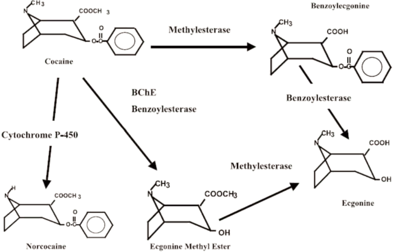

Cocaine
La cocaina (Benzoylmethylecgonine) è una sostanza stupefacente che agisce come potente stimolante del sistema nervoso centrale, vasocostrittore e anestetico.
La cocaina è un estere della ecgonina ed è caratterizzata da una parte idrofila sita sull’atomo di azoto (N) in posizione 8 (azoto amminico terziario con caratteristiche basiche) ed una parte idrofoba localizzata sull’anello aromatico periferico. L’anello aromatico è legato con un legame estereo al resto della molecola, all’anello piperidinico nella conformazione più stabile “a sedia” condensato ad uno di pirrolidina condividendo lo stesso atomo di azoto. La cocaina è un composto otticamente attivo; l’isomero levogiro è quello farmacologicamente attivo. La formula bruta è C17H21NO4; il peso molecolare = 303,36.
Leaves of the Erythroxylon coca plant, which is found in the higher elevations of South America, provide a direct source of cocaine. The separation of cocaine froom coca leaves occurs through multiple steps. The process begins by breaking down and mixing cosa leaves into a liquid to form a coca paste. The costa pase, which contains between 30 and 80 percent of cocaine base, is then dried and sold for recreational use as is ot transported to a crystal lab for further processing. Cystal labs convert cocaine from a base into a salt, which puts cocaine in a powder form. The salt form is produced for two reasons. First, it is a purer concaine product than the cocaine in extracted base form. Second, the salt form allows for either insufflating (snorting) or intravenouslt injecting cocaine.
Many cocaine users, however, prefer the base form, which can be smoked because it has a lowe vaporization point. Vaporization of the salt form of cocaine occurs at a very high temperature: 195 °C, This method makes it hard not only to reach these temperatures with an ignition source but also for users to safely inhale the vaports without burning themselves. However, the base form of cocaine has a lower vaporization point, 98°C, allowing users to easily smoke it by heating the crystals over a flame.
Given that the smuggles often transport the salt form of cocaine, smoking cocaine requires transforming the salt form into a base form, also called freebase. This process consists of removing a hydrochloride molecule (the salt) from the cocaine molecule. When cocaine salt is heated with a mixture of baking soda and water, the hydrochloride molecule separate from cocaine, "freeing" the base from the salt. The freebase form of cocaine is called crack cocaine because of the crackling sound these freebase crystals make when heated. The term freebasing refers to the process of converting a drug from a salt form to a base form and can also refer to using the freebase form of a substance. The term mostly applies to precessing an illicit substance.
Metabolism
Ecgonine (tropane derivative) is a tropane alkaloid found naturally in coca leaves. It has a close structural relation to cocaine: it is both a metabolite and a precursor, and as such, it is a controlled substance in many jurisdictions, as are some substances which can be used as precursors to ecgonine itself.
La cocaina viene assorbita attraverso tutte le mucose e nel tratto gastrointestinale. Essendo un vasocostrittore, il suo assorbimento è in genere lento, ma può essere influenzato dall’assunzione combinata con altre sostanze (es. cannabis o alcol) e dalla via di assunzione che modula anche la distribuzione nei vari comparti. Metaboliti diversi vengono formati in condizioni particolari e sono rilevabili nei campioni biologici. È quanto avviene, ad esempio, per assunzione combinata di cocaina ed alcol. In questa condizione, che si verifica frequentemente nei consumatori, per transesterificazione della cocaina nel fegato in presenza di alcol, si forma un etil analogo della cocaina, la Cocaetilene (benzoilecgonina etil estere) con attività biologica sui neuroni dopaminergici simile alla cocaina. Un altro metabolita insolito si rileva nei campioni biologici a seguito del consumo di cocaina base, crack, per fumo. Si tratta della Metilecgonidina, agonista muscarinico, e del suo metabolita (formato per esterasi) Ecgonidina. Questi due metaboliti sono considerati markers biologici per differenziare l’uso di cocaina per fumo rispetto alle altre vie di assunzione.
Derived molecules
“How is the structure of cocaine related to its anesthetic effects? Can the anesthetic effects be separated from the habituation effect?” If these questions could be answered, it might be possible to prepare synthetic drugs with the structural features essential for the anesthetic activity but without those giving rise to the undesirable effects. Chemists focused on three structural features of cocaine: its benzoic ester, its basic nitrogen atom, and something of its carbon skeleton. This search resulted in 1905 in the synthesis of procaine, which almost immediately replaced cocaine in dentistry and surgery. Lidocaine was introduced in 1948 and today is one of the most widely used local anesthetics.
More recently, other members of the “caine” family of local anesthetics have been introduced, for example etidocaine. All of these local anesthetics are administered as their water- soluble hydrochloride salts.
Method of extraction
Over 700 tons of cocaine is extracted each year; most is intercepted before it can come to market, but enough reaches the “consumer” to make ita very profitable industry. Cocaine is traditionally extracted from coca leaf in three stages—usually in three different labs that may be anything up to a thousand miles or more apart. Extraction and purification by solvent extraction rely on the neutral base having low water solubility but high solubility in nonpolar organic solvents, whereas protonated cocaine ions are water soluble but have very low solubility in the organic layer:
Leaves are mashed up with base (e.g., lime) to ensure that neutral cocaine molecules are present; kerosene then extracts them from the leaves. Dilute sulfuric acid is added to the kerosene, so protonated cocaine moves to the aqueous layer. This is separated and treated with an alkali (lime), precipitating neutral cocaine, the crude “coca paste”, which is between 30% and 80% pure.
In another lab, the crude paste is dissolved in dilute H2SO4, and aqueous KMn04, is added until the purple solution turns colourless; this oxidises alkaloid impurities, leaving brown, insoluble, MnO2, which is filtered off. The aqueous layer, containing protonated cocaine, is neutralised, usually with ammonia solution; precipitated cocaine is filtered off and dried. This is “coke base”.
At a “crystal lab”, the coke base is dissolved in an organic solvent such as ether and filtered to remove insoluble impurities. A mixture of conc. HCl and propanone is added to the filtrate, and cocaine hydrochloride crystallises out.
The hydrochloride salt is the form traditionally injected or snorted; heating it destroys much of the cocaine. If this salt is mixed with baking soda and smoked, it generates free, volatile “crack” cocaine (the name arising from the crackling noise of the carbon dioxide gas given off).
Pharmacodynamie
La cocaïne, à l'instar des amphétamines et des cathinones, est un psychostimulant.
Ses effets stimulants et euphorisants sont attribués au fait qu'elle bloque la recapture de la dopamine et entraîne donc une augmentation de la concentration du neurotransmetteur dans diverses régions du cerveau notamment le nucleus accumbens. Elle bloque également la recapture de la noradrénaline, ce qui est responsable de ses effets sur le système cardio-vasculaire, et de la sérotonine.
Crack
La cocaïne est un alcaloïde tropanique. Sous forme de chlorhydrate de cocaïne (sel résultant de la protonation de la fonction amine par l'acide chlorhydrique), elle est très soluble dans l'eau. Sous forme de base libre (huile de cocaïne non protonée), elle est cette fois-ci insoluble dans l'eau et très soluble dans les solvants organiques de type acétone ou éther diéthylique. Il est possible de passer de la base libre au sel chlorhydrate par bullage de chlorure d'hydrogène.
The usual method of using cocaine hydrochloride is to arrange the powdert in a line on a flat surface and inhale it nasally via a small tube. Due to vasoconstrictive properties of cocaine, chronic use by insufflation often causes perforated septum and other sinus conditions.
The hydrochloride salt of cocaine has a high melting point (197 °C) and is not very stable when heated to high temperature. It is therefore costly and wasteful to smoke because large amounts need to be used. The freebase form cocaine has a greater thermal stability and a lower melting point (98 °C), making it a more suitable preparation to smoke.
Taglio
La coca può essere alterata, in gergo "tagliata", con diverse sostanze: queste sostanze vegono aggiunte alla droga nella fase di produzione, oppure, a livelli più bassi, vengono mischiate alla polvere, al prodotto finale. Esiston tre tipologie diverse di prodotti da taglio:
sostanze che producono gli stessi efffetti psicoattivi della cocaine, in questo caso si parla di talgi attivi. Si mischiano alla cocaina anfetamine o altre sostanze stimolanti, come la caffeina, che aumentano e allungano l'effetto stupefacente.
sostanze che riproducono alcuni degli effetti collaterali della cocaina, sono i tagli cosmetici. Si usano farmaci e anestetici locali come la lidocaina e l'efedrina.
prodotti che incrementano il volume senza dare effetti dannosi, i tagli inerti. Come farina, lattosio, paracetamolo, bicarbonato di sodio. La sostanza maggiormente utilizzata è la mannite, un lassativo blando e il levamisolo un antiparasitaire qui développe des synergies dangereuses avec la cocaïne
Stéréochimie
La cocaïne possède quatre atomes de carbone chiraux dont deux (C1 et C5) sont les atomes tête de pont du 8-azabicyclo[3.2.1]octane et se trouvent de ce fait obligatoirement dans la conformation (R, S) pour des raisons de contraintes géométriques. Ils peuvent néanmoins se présenter sous les deux formes (1R, 5S) et (1S, 5R) dans la cocaïne car ses substituants cassent la symétrie du bicycle; les carbones C2 et C3 quant à eux peuvent donner chacun deux formes également. Il y a donc 24 = 16 formes énantiomères/diastéréoisomères de la cocaïne, mais la forme naturelle, extraite des feuilles d'une plante nommée Erythroxylon coca, consiste uniquement en le diastéréoisomère (1R, 2R, 3S, 5S).